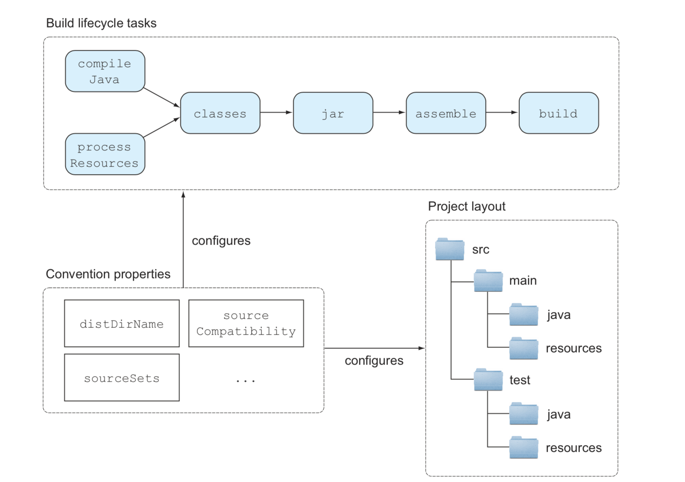
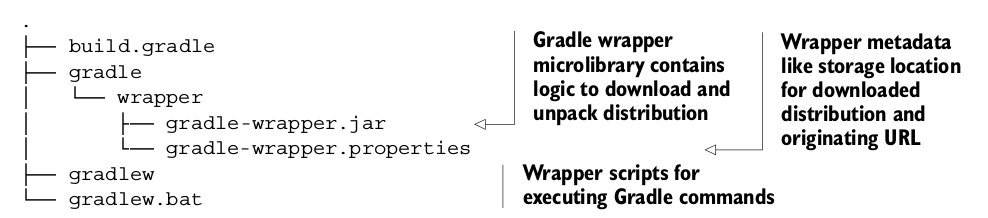

Gradle的构建生命周期 
Gradle 项目可以使用 Maven Plugin 将构建上传到 Maven 仓库中： 1 2 3 4 5 6 7 8 9 10 11 apply plugin: 'maven' ... uploadArchives { repositories.mavenDeployer { repository(url: "http://localhost:8088/nexus/content/repositories/snapshots/") { authentication(userName: "admin", password: "admin123") pom.groupId = "com.juvenxu" pom.artifactId = "account-captcha" } } }
想在 build 时发布版本导 Maven 仓库中，只需要添加一行任务依赖配置即可： 1 build.dependsOn 'uploadArchives'
通过 gradle -q tasks 显示所有的任务 任务名称缩写 Gradle提高效率的一个办法就是能够在命令行输入任务名的驼峰简写，当你的任务名称非常长的时候这很有用
命令行选项
-i:Gradle默认不会输出很多信息，你可以使用-i选项改变日志级别为INFO
-s:如果运行时错误发生打印堆栈信息
-q:只打印错误信息
-?-h,–help:打印所有的命令行选项
-b,–build-file:Gradle默认执行build.gradle脚本，如果想执行其他脚本可以使用这个命令，比如gradle -b test.gradle
–offline:在离线模式运行build,Gradle只检查本地缓存中的依赖
-D, –system-prop:Gradle作为JVM进程运行，你可以提供一个系统属性比如：-Dmyprop=myValue
-P,–project-prop:项目属性可以作为你构建脚本的一个变量，你可以传递一个属性值给build脚本，比如：-Pmyprop=myValue
tasks:显示项目中所有可运行的任务
properties:打印你项目中所有的属性值
指定 Main-Class 1 2 3 4 5 jar { manifest { attributes 'Main-Class': 'com.jpanj.hello.Hello' } }
gradle wrapper 的目录结构 
所以，gradle目录、gradlew 和 gradlew.bat 都应该放在版本控制内。
包装器可以根据需求自定义，如访问外网受限时： 1 2 3 4 5 6 7 8 task wrapper(type: Wrapper) { //Requested Gradle version gradleVersion = '1.2' //Target URL to retrieve Gradle wrapper distribution distributionUrl = 'http://myenterprise.com/gradle/dists' //Path where wrapper will be unzipped relative to Gradle home directory distributionPath = 'gradle-dists' }
更多包装器的特性查看：http://gradle.org/docs/current/dsl/org.gradle.api.tasks.wrapper.Wrapper.html
Gradle允许通过外部属性来定义自己的变量 外部属性一般存储在键值对中，要添加一个属性，需要使用ext命名空间： 1 2 3 4 5 6 7 8 9 10 //Only initial declaration of extra property requires you to use ext namespace project.ext.myProp = 'myValue' ext { someOtherProp = 123 } //Using ext namespace to access extra property is optional assert myProp == 'myValue' println project.someOtherProp ext.someOtherProp = 567
外部属性可以定义在一个属性文件中： 通过在 /.gradle路径 或者项目根目录下的 gradle.properties 文件来定义属性，可以直接注入到项目中： 假设在 gradle.properties 文件中定义了下面的属性：
1 2 exampleProp = myValue someOtherProp = 455
可以在项目中访问这两个变量：
1 2 3 4 5 assert project.exampleProp == 'myValue' task printGradleProperty << { println "Second property: $someOtherProp" }
定义属性的其他方法
通过 -P 命令行选项来定义项目属性
通过 -D 命令行选项来定义系统属性
环境属性遵循这个模式：ORG_GRADLE_PROJECT_propertyName=someValue
当任务创建的时候你可以添加任意多个动作，每一个任务都有一个动作清单，他们在运行的时候是执行的 1 2 3 4 5 6 7 8 9 10 11 12 13 task printVersion { //任务的初始声明可以添加first和last动作 doFirst { println "Before reading the project version" } doLast { println "Version: $version" } } printVersion.doFirst { println "11111" } printVersion.doLast { println "22222" }
输出
1 2 3 4 5 > Task :printVersion 11111 Before reading the project version Version: 0.1 22222
当你想添加动作的那个任务不是你自己写的时候这会非常有用，你可以添加一些自定义的逻辑，比如你可以添加 doFirst 动作到 compile-Java 任务来检查项目是否包含至少一个 source 文件。
dependsOn方法用来声明一个任务依赖于一个或者多个任务 1 2 3 4 5 6 7 8 9 10 11 task first << { println "first" } task second << { println "second" } //声明多个依赖 task printVersion(dependsOn: [second, first]) << { logger.quiet "Version: $version" } task third << { println "third" } //通过任务名称来声明依赖 third.dependsOn('printVersion')
输出
1 2 3 4 first second Version: 0.1 third
Gradle 并不保证依赖的任务能够按顺序执行，dependsOn方法只是定义这些任务应该在这个任务之前执行，但是这些依赖的任务具体怎么执行它并不关心（也就是和 [second, first] 顺序 无关），因为任务不是顺序执行的，就可以并发的执行来提高性能。
可以使用 finalizedBy 使一个任务结束后自动触发另一个 1 2 3 4 task first << { println "first" } task second << { println "second" } //声明first结束后执行second任务 first.finalizedBy second
first 结束后自动触发任务 second：
1 2 3 4 5 6 > Task :first first > Task :second second
allprojects 和 subprojects 你可以用 allprojects 方法给所有的项目添加 group 和 version 属性，由于根项目不需要 Java 插件，你可以使用 subprojects 给所有子项目添加Java插件:
1 2 3 4 5 6 7 8 allprojects { group = 'com.manning.gia' version = '0.1' } subprojects { apply plugin: 'java' }